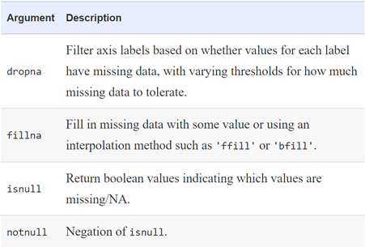

During the course of doing data analysis and modeling, a significant amount of time is spent on data preparation: loading, cleaning, transforming, and rearranging. Such tasks are often reported to take up 80% or more of an analyst’s time. Sometimes the way that data is stored in files or databases is not in the right format for a particular task. Many researchers choose to do ad hoc processing of data from one form to another using a general-purpose programming language, like Python, Perl, R, or Java. Fortunately, pandas, along with the built-in Python language features, provides you with a high-level, flexible, and fast set of tools to enable you to manipulate data into the right form.
Missing data occurs commonly in many data analysis applications. For numeric data, pandas use the floating-point value NaN (Not a Number) to represent missing data.
import pandas as pd
from numpy import nan as NA
data = pd.Series([1, NA, 3.5, NA, 7])
Now if you check the data in the console, it will show:
Out[20]:
0 1.0
1 NaN
2 3.5
3 NaN
4 7.0
dtype: float64
Now to check the NaN values, use the following command in the console:
>> data.isnull()
Out[19]:
0 False
1 True
2 False
3 True
4 False
dtype: bool
See the below table for a list of some functions related to missing data handling.

There are a few ways to filter out missing data. The dropna can be helpful. On a Series, it returns the Series with only the non-null data and index values. If we consider the above example, you can obtain the dataset data by filtering out the NaN values using the following code:
data.dropna()
#It will show you the following output:
Out[17]:
0 1.0
2 3.5
4 7.0
dtype: float64
Rather than filtering out missing data (and potentially discarding other data along with it), you may want to fill in the “holes” in any number of ways. For most purposes, the fillna method is the workhorse function to use. Calling fillna with a constant replaces missing values with that value:
data.fillna(0)
# Here we have replaced with the value ‘0’. It will produce the following results:
Out[23]:
0 1.0
1 0.0
2 3.5
3 0.0
4 7.0
dtype: float64
With fillna you can decide the constant value in a more creative way. For example, you might pass the mean or median value of a Series:
data.fillna(data.mean())
# You get the output:
Out[24]:
0 1.000000
1 3.833333
2 3.500000
3 3.833333
4 7.000000
dtype: float64